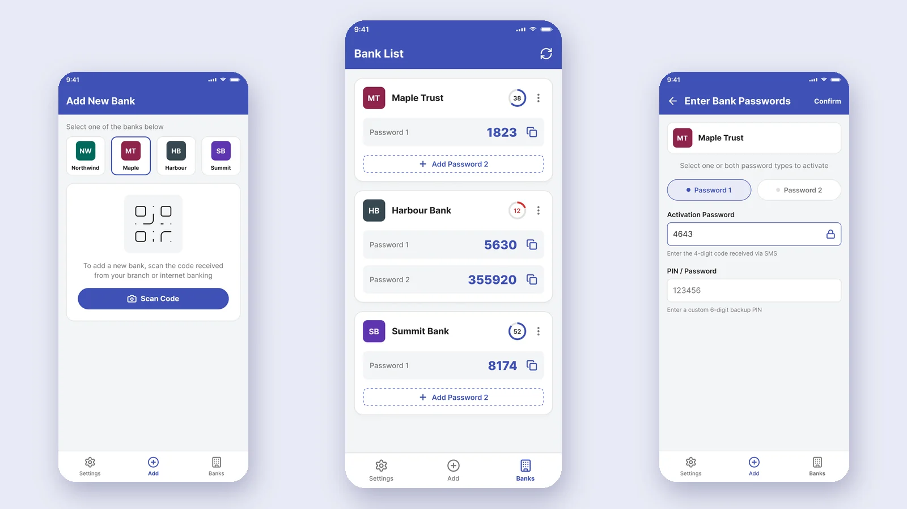
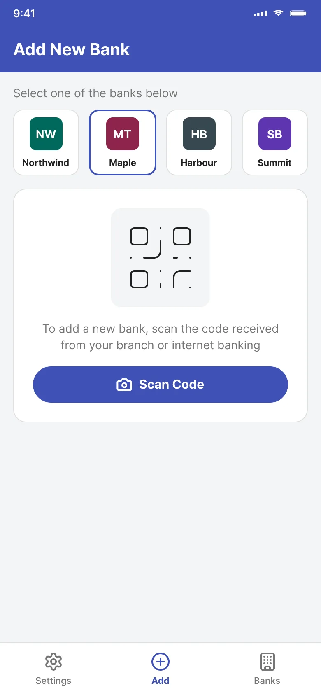
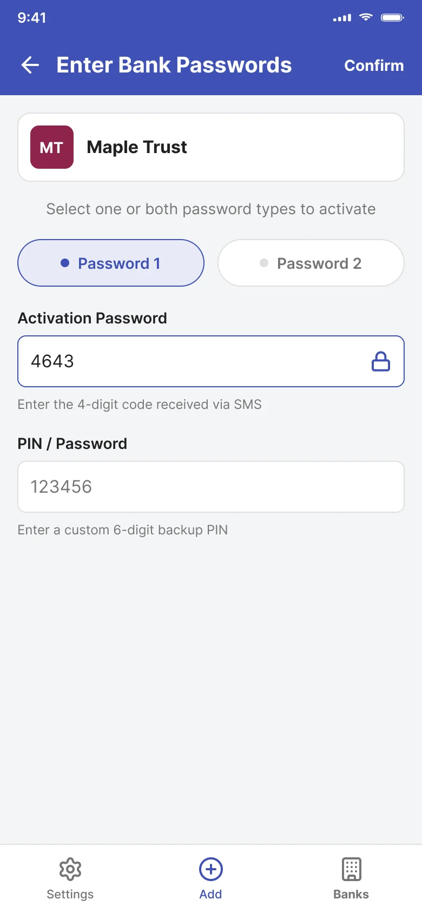
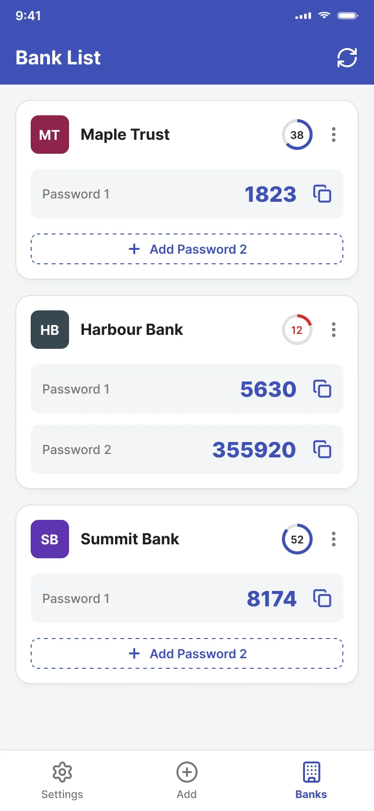
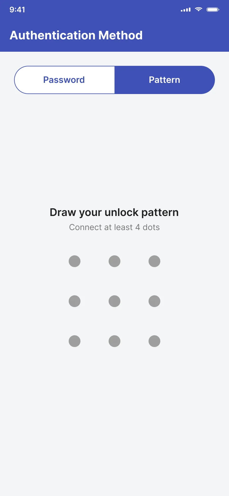
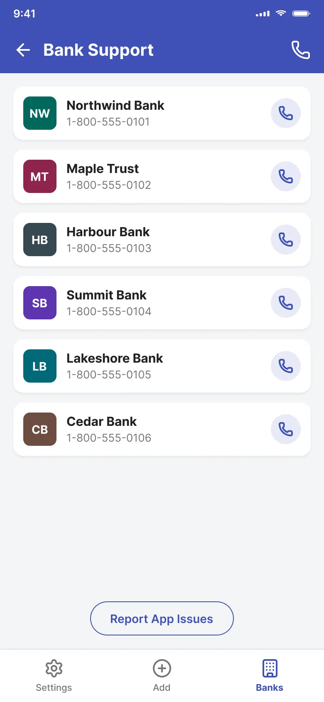
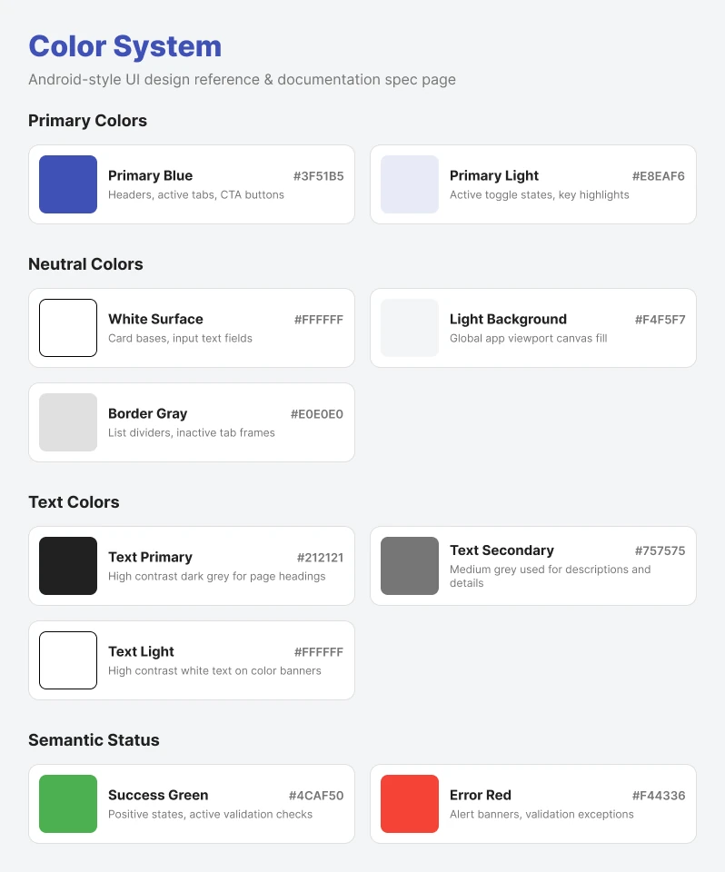

ATMs and card readers
Used at physical terminals: withdrawing cash or paying in store.

Note: Screens are recreated with fictional banks and placeholder data to respect confidentiality. The flows and design decisions reflect the product I worked on.
Cardholders needed a one-time password to approve card transactions. The app generated those passwords on the phone itself, so no connection was needed, and each code expired after a short countdown. Each bank could issue two kinds of password:
Used at physical terminals: withdrawing cash or paying in store.
Used when paying or moving money online.
As UI/UX Designer, I designed the app’s flows and screens for native iOS and Android, following Apple’s Human Interface Guidelines and Material Design, from wireframes and high-fidelity mockups through annotated developer handoff. I also architected the unified design system used across the company’s products.
Three steps take a cardholder from installing the app to approving a payment.

The user picks their bank and scans the code they received from their branch or internet banking.

They choose Password 1, Password 2, or both, enter the activation code sent by SMS, and set a 6-digit backup PIN.

Each bank gets one card with its active passwords, a countdown to expiry, and a one-tap copy button.
The countdown ring shows how long the code stays valid, turns urgent in the last 5 seconds, and the new code rolls in when it expires. Copy confirms with a check, so users never wonder whether it worked. Codes here are random, not real passwords.
Expires in 30 seconds
Each card shows only the passwords the user has activated. Password 2 appears as a dashed “Add” action rather than an empty field, so the screen never shows a code that doesn’t exist yet.
A countdown ring shows the seconds left as a number. It turns red in the last 15 seconds, and because the number is always visible, the warning never relies on color alone.
Codes are read at a card reader or pasted into a checkout, often in a hurry. Large digits and a copy button beside each code make both quick.
The app has its own pattern or password lock and a configurable screen-lock timeout, so an unlocked phone doesn’t expose card passwords.

Users choose between a password and a pattern to unlock the app.

If a card is lost or a password fails, each bank’s support line is listed with a call button, next to a way to report app issues.
I architected a unified design system of 20 components that five or more product teams adopted. After it rolled out, our QA team reported far fewer color and style inconsistencies, and handoff to developers became faster.

2M+
people used the app
20
design system components
5+
product teams adopted the system
I also contributed to a login redesign that reduced fraudulent login attempts.
Looking back with fresh eyes, I audited the color system against WCAG 2.1 AA. Most pairs pass comfortably, like white on the primary blue at 6.87:1. Three would fail if used for text:
| Pair | Contrast | Fix | New contrast |
|---|---|---|---|
| Text Secondary on Light Background | 4.22:1 | #6B6B6B | 4.89:1 |
| White on Success Green | 2.78:1 | #2E7D32 | 5.13:1 |
| White on Error Red | 3.68:1 | #D32F2F | 4.98:1 |
AA requires 4.5:1 for body text. The red I use for the countdown warning, #D32F2F, already comes from this corrected set.